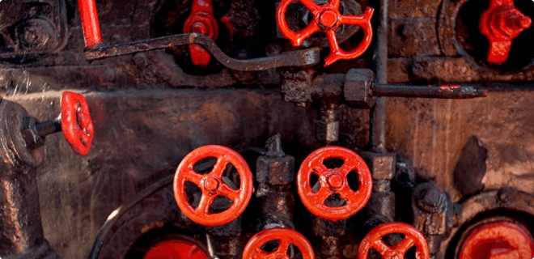

Boilerman / Boiler Tender Asbestos Exposure and Mesothelioma
Exploring the past use of asbestos in the boiler industry and the increased
danger of mesothelioma for laborers

Introduction: Boiler Industry's Past Asbestos Use
The boiler industry's heavy reliance on asbestos-containing materials before
the 1990s has left a profound mark on countless workers. Recognizing the
roles and risks involved is pivotal for understanding the broader
mesothelioma crisis many industry veterans face today.
The Consequences of Asbestos Exposure
It is now widely understood that prolonged exposure to asbestos fibers,
often disturbed during boiler operations and maintenance, can lead to
serious respiratory illnesses, including mesothelioma. The latency period
between exposure and manifestation of symptoms is often decades, leading
many former workers in the boiler industry to face these risks in their
later years.
Boiler-Related Occupations and Asbestos Exposure
This section provides information on boiler-related occupations and
potential asbestos exposure:
-
Boiler Coverers: These specialists played a pivotal role in the
insulation process of boilers. Given the heat-intensive nature of boilers,
asbestos, known for its insulating and fire-resistant properties, was a
popular material choice. As a result, boiler coverers had a high
likelihood of coming into direct contact with asbestos during the
application process.
-
Boiler Inspector: Tasked with ensuring the safety and optimal
functionality of boilers, these professionals often encounter
asbestos-containing materials during inspections. The disassembly or
inspection of older components meant a higher risk of asbestos fiber
disturbance.
-
Boiler Insulator: With a primary duty to insulate boilers, these
workers would frequently use materials laden with asbestos, making them
susceptible to inhalation of asbestos fibers, especially when applying,
repairing, or removing insulation.
-
Boiler Maker: These craftsmen were in charge of constructing
boilers. Given the era's reliance on asbestos for heat resistance, many
components they worked with during the assembly process might have
contained this hazardous material.
-
Boiler Mechanic Helper: Supporting boiler mechanics in repair and
maintenance tasks, these helpers were often near asbestos-containing
insulations, seals, and other components, putting them at risk of
exposure.
-
Boiler Operator: Tasked with the daily operations of boiler units,
these individuals would often face exposure during maintenance, repair, or
when handling older asbestos-containing parts that might degrade over
time.
-
Boiler Plant Operator: Overseeing the functioning of extensive
boiler plants, these operators would supervise operations involving
machinery and components that incorporated asbestos, especially in older
setups.
-
Boiler Repair: Workers in this role were on the front lines,
dealing directly with malfunctioning boilers. This often involved
handling, replacing, or coming into contact with asbestos-laden parts,
risking exposure.
-
Boiler Supervisor: Managing boiler operations meant these
supervisors were regularly around asbestos-containing materials,
especially when overseeing repairs, replacements, or installations.
-
Boiler Technician: As experts in boiler functionality and
maintenance, technicians were frequently exposed to asbestos, especially
when dealing with insulation, seals, and other asbestos-infused
components.
-
Boiler Tester: Their role required them to test various
functionalities of boilers, which often meant interacting with parts
containing asbestos, risking fiber disturbance and inhalation.
-
Boiler Washer: Tasked with cleaning boilers, these workers could
disturb asbestos fibers, especially when washing older units or
components.
-
Boiler Worker: Working in various capacities within the boiler
industry, these general workers would encounter multiple
asbestos-containing materials during their daily tasks.
-
Boilermaker: Skilled artisans who crafted and mended boilers,
boilermakers had direct interaction with asbestos products, whether
through immediate use or incidental contact during their duties.
-
Boilermaker Helper: Aiding boilermakers in their tasks, these
helpers were invariably exposed to asbestos materials during the
construction, repair, or maintenance of boilers.
-
Boilermaker Supervisor: Leading teams of boilermakers meant these
supervisors were often present in environments where asbestos-containing
components were handled, risking exposure.
-
Boilerman: Much akin to boiler operators, boilermen managed the
workings of boilers, and given the prevalence of asbestos in older units,
they faced exposure risks, especially during maintenance.
-
Boilers Mfg. Plant Worker: Employees in plants that produced
boilers constantly interacted with various components. Given the extensive
use of asbestos in the past, these workers were at significant risk of
exposure during their daily operations.
Available Asbestos Trust Funds for boiler-related jobs
If you have worked in boiler-related jobs and have been diagnosed with
mesothelioma or other asbestos-related diseases, you are entitled to
compensation from some of the 16 asbestos trust funds listed below. Take
advantage of what you are rightfully owed. Take action now and get the
compensation you deserve.
Miami, FL : Asbestos Claims by Type and Diagnosis
The compensation amounts from filed asbestos claims of the 18 available
trust funds in Miami, FL, are detailed in the tables below. These payouts
are obtained from the most recent scheduled values and adjusted according to
the relevant ratios*.
For example: If you have only worked in Miami, FL area and during
your employment(s), you utilized at least one product from each company that
reorganized into these 18 trust funds, you might be eligible for
compensation based on your diagnosis.
Miami, FL Mesothelioma Claims
| Claim Type |
Expedited Review |
Individual Review |
| Applied Ratio |
$2,098,134 |
$2,549,594 |
Miami, FL Lung Cancer Claims
| Claim Type |
Expedited Review |
Individual Review |
| Applied Ratio |
$2,098,134 |
$2,549,594 |
Miami, FL Severe Asbestosis Claims
| Claim Type |
Expedited Review |
Individual Review |
| Applied Ratio |
$2,098,134 |
$2,549,594 |
Miami, FL Other Cancers Claims
| Claim Type |
Expedited Review |
Individual Review |
| Applied Ratio |
$2,098,134 |
$2,549,594 |
@@include('./claims-calculator.html')
@@include('../common/case-compensation.html')